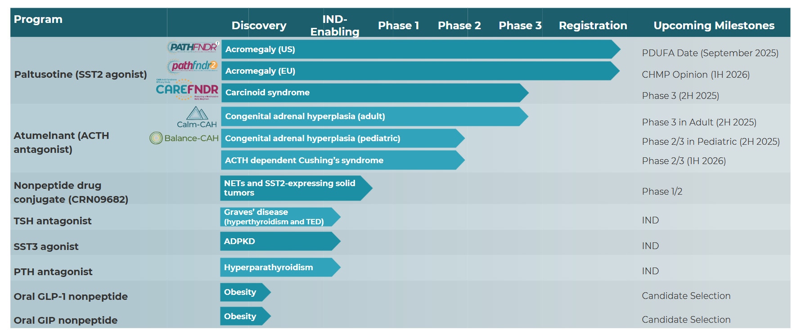

Management
Intro to Management: I have been following this company for about a year now. I have been very impressed with their management team thus far. There are a few key areas of business that I think a management team has to demonstrate expertise in to build a long term winning biotech company.
Clinical Development: They need expertise at advancing drugs through the clinical development process. This company has advanced multiple drugs from Phase 1 through Phase 3 clinical development. Paltusotine has been submitted with a PDUFA date of September 25, 2025. They are starting a phase 3 soon on Paltusotine in Carcinoid Syndrome. They have Atumelnant which will be starting phase 3 this year in two indications. They will add 4 new IND's this year for additional drugs. They are demonstrating some expertise at advancing drugs through the clinical trial process.
Regulatory Development: They need expertise at navigating the regulatory process with the FDA. They managed to navigate 1 drug through a PDUFA date with Palsonify. They have several other late stage programs which are approaching submission over the next few years. Overall, they have some experience here, but I would like to see more before I am confident with their ability to navigate the regulatory process.
Managing Balance Sheet: They need expertise at managing the balance sheet. They have $1.2 billion in cash and no debt. They have plenty of cash for at least 2 years. The key will be how well sales grow to offset the increased cash burn of a commercial sales team.
Commercial Sales: The final key expertise for a management team is the ability to build a successful commercial sales team. They seem to be ramping up for a sales team while they wait for the Palsonify approval which shows they plan to launch this drug on their own. We have to wait and see how good they will do at selling their first drug.
